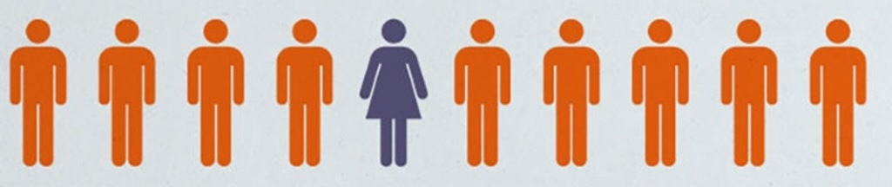
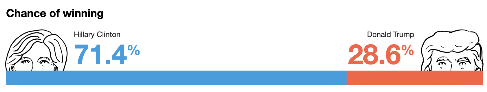

Small project 2: Pick your poison
Introduction
In this small project, you will again think of questions to ask of one or more data sets and use various R functions and plots to address those questions.
But this time, there are multiple options for the data sets.
You can use one or more of the data sets listed below. All of your questions can be about the same data set or different data sets.
You can bring your own data set, but if you choose this option, bear in mind that your final project asks you to find a data set related to your theis or interests, and any plots you make for this small project should not be duplicated in the final project.
All your questions can be from one data set, or you can ask different questions of different data sets. It’s up to you. Please see the detailed descriptions of the example data set at the bottom of the page.
Description of example data sets
1. Research funding bias

Data on gender bias in research funding in the Netherlands. From van der Lee and Ellemers (2015), PNAS, “Gender contributes to personal research funding success in The Netherlands”.
Columns:
discipline: Research area discipline.applications_men: Total applications by men.applications_women: Total applications by women.awards_men: Total awards received by men.awards_women: Total awards received by women.success_rates_men: Success rate for men.success_rates_women: Success rate for women.
2. Pollling data from US 2016 presidential elections

Poll results from US 2016 presidential elections. Data from FiveThirtyEight.
Columns:
state: State in which poll was taken. “U.S” is for national polls.startdate: Poll’s start date.enddate: Poll’s end date.pollster: Pollster conducting the poll.grade: Grade assigned by fivethirtyeight to pollster.samplesize: Sample size.population: Type of population being polled. A = all adults, RV = registered voters, LV = likely voters, V = votersrawpoll_clinton: Percentage for Hillary Clinton.rawpoll_trump: Percentage for Donald Trumprawpoll_johnson: Percentage for Gary Johnsonrawpoll_mcmullin: Percentage for Evan McMullin.adjpoll_clinton: Fivethirtyeight adjusted percentage for Hillary Clinton.ajdpoll_trump: Fivethirtyeight adjusted percentage for Donald Trumpadjpoll_johnson: Fivethirtyeight adjusted percentage for Gary Johnsonadjpoll_mcmullin: Fivethirtyeight adjusted percentage for Evan McMullin.
3. Primate fruit patch visits
Characteristics of fruit-producing trees visited by several capuchin groups over a 4-year period.
Columns:
group: Code of capuchin group that visited the tree.scientific_name: Scientific name of the tree species.timestamp: Date and time of the visit.elevation: Elevation of tree in meters.num_monkeys: Number of monkeys observed eating in the tree.leaf_cover: Leaf cover score on 1–4 scale (0 = no leaves, 4 = full of leaves)leaf_maturity: Leaf maturity score on 1–4 scale (0 = no mature leaves, 4 = 100% of leaves present are mature leaves)fruit_cover: Fruit cover score on 1–4 scale (0 = no fruit, 4 = full of fruit)fruit_maturity: Fruit maturity score on 1–4 scale (0 = no ripe fruit, 4 = 100% of fruits present are ripe)flower_cover: Flower cover score on 1–4 scale (0 = no flowers, 4 = full of flowers)flower_maturity: Flower maturity score on 1–4 scale (0 = no mature flowers, 4 = 100% of flowers present are mature)trunk_diameter_cm: Diameter at breast height of the tree trunk.fruit_avail_index: A ripe fruit “availability index” ranging from 0 (no ripe fruit) to 1 (completely full of ripe fruit). Calculated as (fruit_cover / 4) * (fruit_maturity / 4).fruit_biomass_kg: Estimated biomass of available ripe fruit.lon: Geographic longitude coordinate (crs = 4326)lat: Geographic latitude coordinate (crs = 4326)
4. Hourly temperature measurements in Kenya
Air temperature recorded hourly during 2016 by a weather station located in Amboseli national park, Kenya.
Columns:
year_of: Yearmonth_of: Abbreviation of monthdate_of: Date of temperature reading0: Air temperature at hour 0 (midnight)1: Air temperature at hour 1 (1 am)
…
…
22: Air temperature at hour 22 (10 pm)23: Air temperature at hour 23 (11 pm)
Instructions
Content Instructions
- Think of three (and only three!) conceptual questions about any of the data sets. Clearly state each question in your report. You might want to create different sections for your different questions.
- Using
dplyrand/ortidyr, manipulate the data as necessary to get it into shape for plotting. - Using
ggplot2, create at least one plot for each question that helps you to answer the question. For each plot, provide an explanation for why you chose the type of plot (e.g. scatterplot, boxplot, bar chart, histogram, etc.), and why you believe that it is best for showing the information related to your question. - Answer your questions by interpreting your plots and identifying any trends that they reveal (or do not reveal).
- In total, your text related to the conceptual questions, plot design decisions, and interpretation should be in the neighborhood of 1000 words.
- In your report,
- Use at least 3 different
dplyrverbs. This can include, but is not limited to,filter(),arrange(),select(),mutate(), andslice(). - Use at least 1
tidyrverb. This can include, but is not limited to,pivot_longer(),pivot_wider(),unite(), andseparate(). - Use at least 3 different
ggplot2geoms.
- Use at least 3 different
Formatting Instructions
- The project report should look similar to some of our class activities, but it should include more narrative/explanation along with the code and plots.
- Please create your report in an Quarto file called
small-project-2_XX.qmd, where you substitute your initials for “XX” (for example, my report would be calledsmall-project-2_FC.qmd. - The Quarto report should show all of the code that you used to work with the data and produce your plots.
- Submit your report (in
.htmland.qmdformats) through Canvas.
Evaluation Criteria
Projects will be graded on workflow and presentation rather than particular conclusions. So don’t worry if you ask a question that fails to turn up interesting results! The data are what they are.
To receive full credit, I am looking for:
- Clear, coherent questions about the data. Questions end in a question mark!
- The data manipulations should be purposeful—they should be used to get the data into shape for answering your questions and plotting.
- Each plot that you include in the report should help to answer one of your proposed questions, with a justification for why you chose to make the type of plot that you made. I am not looking for a dumping ground of many preliminary or poor-quality plots that you experimented with while trying to make a good one.
- Interpretation of your plots and responses to your proposed question.